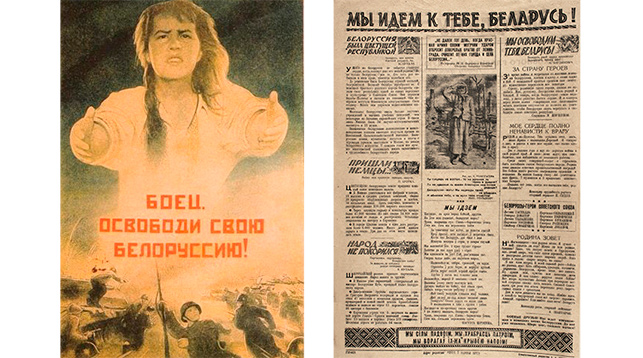

Знаковой датой отмечен 2024 год – 80-й годовщиной освобождения Республики Беларусь от немецко-фашистских захватчиков, 2025 год – 80-й годовщиной Победы советского народа в Великой Отечественной войне. В связи с этим 5 октября 2023 года Президент Беларуси Александр Григорьевич Лукашенко подписал Указ № 316 «О подготовке и проведении праздничных мероприятий». Данный документ принят в целях координации деятельности государственных органов и организаций, общественных объединений по подготовке и проведению на высоком организационном уровне празднования 80-й годовщины освобождения Республики Беларусь от немецко-фашистских захватчиков и Победы советского народа в Великой Отечественной войне.
23 сентября 1943 года. Именно этот день навсегда вошёл в историю Беларуси как начало освобождения нашей страны от фашистской оккупации. Началось оно с районного центра Комарин. В 2024 году исполняется 80 лет со дня полного освобождения Беларуси от немецко-фашистских захватчиков.
2024 год – юбилейная дата операции «Багратион», в ходе которой вся территория Беларуси была освобождена от гитлеровских захватчиков! В ходе Белорусской стратегической наступательной операции «Багратион», проведенной в июне-июле 1944 года, советские войска полностью освободили территорию Беларуси.